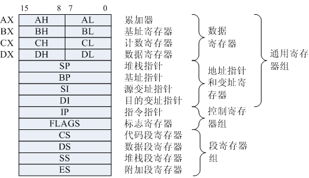
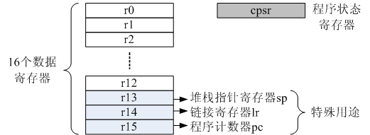
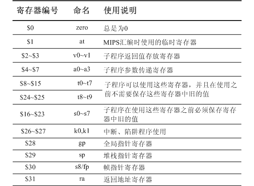
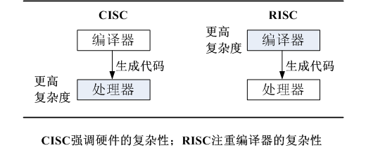

CPU体系架构-寄存器
CPU通用寄存器作为CPU体系架构的一部分，不可或缺。通用寄存器是CPU的算术逻辑运算操作最直接，频繁的位置。对于RISC体系的CPU，算术逻辑运算甚至只能够操作CPU通用寄存器中的数据。我们的目的不在于详尽的说明每一种CPU体系的寄存器情况，而在于将常用而且在不同CPU体系下容易混淆的寄存器做一个总结。下面就以8086处理器，ARM7内核，MIPS32内核为例说明。
8086处理器通用寄存器
8086处理器，是学习X86处理器的基础（严格意思上来说，8086处理器还不能够算作x86处理器。参考intel处理器发展历史了解更多），所以作为很多大学微机原理课程的教学内容。8086的通用寄存器分为通用数据寄存器和通用地址指针寄存器。
通用数据寄存器为AX，BX，CX，DX。这4个寄存器都是16位寄存器，每个寄存器可以分为高低8位寄存器使用，例如AX可以分为AH和AL两个8位寄存器。
通用地址指针寄存器为SP，BP，SI，DI。通用地址指针寄存器只能够使用16位，用于存放存储器段内16位偏移地址值。
和通用地址指针寄存器相对应，8086还有4个16位的段寄存器，分别为CS，DS，SS，ES。4个16位的段寄存器和4个地址指针寄存器产生20位的地址，用于存储器寻址。
然后就是标志寄存器FLAGS，也是16位。相当于ARM7中的程序状态寄存器cpsr。
最后，就是16位的指令指针寄存器IP，用于存放当前将要执行指令的16位偏移地址。相当于RISC处理器中的程序计数器PC寄存器。

ARM7处理器通用寄存器
ARM7处理器内核使用的是ARMv4指令集，也是现在很多人学习ARM的首选。其实，下面介绍的通用寄存器并不局限于ARM7内核，基本上所有的ARM内核都是相同的。这里选择代表性的ARM7内核作为示例。
ARM7的通用寄存器分为数据寄存器和程序状态寄存器，由于ARM内核可以工作于多种模式下，我们选择最一般，也是最常用的用户模式。在用户模式下，一共有16个数据寄存器r0~r15，1个程序状态寄存器cpsr。这些寄存器都是32位。
16个数据寄存器中，最后3个寄存器（r13，r14，r15）是有特殊用途的。其实，r13和r14有的时候还可以用作通用寄存器。
- r13用作堆栈指针寄存器（sp），保存堆栈的栈顶地址
- r14用作链接寄存器（lr），保存调用子程序的返回地址
- r15用作程序计数寄存器（pc）
当然，ARM处理器还可能切换到其它的运行模式，寄存器的数目和使用略有不同。

MIPS32处理器通用寄存器
MIPS处理器，以MIPS32指令集的处理器最为成功和常见，下面就以MIPS32指令集处理器为例说明MIPS的通用寄存器情况。MIPS32拥有32个通用寄存器\(0~\)31，都是32位。

下面就一些特殊用途的，和X86以及ARM处理器有对比关系的寄存器列举出来。
- $29被用作堆栈指针寄存器（sp），保存堆栈的栈顶地址。该寄存器和x86的地址指针寄存器中的堆栈指针寄存器SP，ARM的堆栈指针寄存器r13（sp）作用一致。
- $30被用作帧指针寄存器（s8/fp）
- $31被用作返回地址寄存器（ra，return address），相当于ARM的链接寄存器（lr），保存调用子程序的返回地址
除此之外，MIPS还针对子程序的调用，将寄存器的使用做了明确的划分。例如，利用寄存器\(2，\)3来作为子程序返回值传递的寄存器，利用寄存器\(4~\)7作为向子程序传递参数用的寄存器。所以，要理解MIPS寄存器的使用，还需要经常联系到软件编译的相关知识。
下面，我们就X86，ARM，MIPS中几个常用的，特殊的寄存器做一个详尽的说明。
堆栈指针寄存器sp
可以看到，X86，ARM，MIPS下面都有堆栈指针寄存器。X86为通用地址指针寄存器中的堆栈指针SP，ARM为第14个通用寄存器r13作为堆栈指针寄存器sp，MIPS为第30个通用寄存器$29作为堆栈指针寄存器sp。sp中存放的是堆栈的栈顶地址。稍稍有点区别的是，X86由于地址产生方式的不同，堆栈指针sp（16位）和堆栈段寄存器（16位）共同产生堆栈栈顶地址（20位）。
X86的堆栈指针寄存器是一个特殊用途寄存器，因为该寄存器专门为堆栈设计，并且还有专门的指令pop和push来升降堆栈（入栈，出栈）。而ARM，MIPS的堆栈指针寄存器本质上是一个通用数据寄存器，和其他的通用数据寄存器的地位是一样的。堆栈的升降（入栈，出栈）也没有像X86中的专门的指令来操作，而是使用普通的算术指令（add，sub）来操作。
ARM的寄存器r13（sp）在具体的应用场合，就可以当做通用寄存器使用。--《ARM嵌入式系统开发-软件设计与优化》沈建华 译 P17
另外，需要说明的一点是，堆栈本质上是一个计算机程序（软件）的概念。CPU是为了支持程序运行（你可能会笑，CPU有不运行程序、软件？但是没有找到更好的表述方式），所以设计了堆栈指针寄存器。堆栈指针，从这个名字就可以看出，该寄存器中存放的是一个地址，而且一般是指向存储器的地址。该存储器就是为了来存放程序运行需要保存到堆栈的中数据的。如果程序中不需要使用到堆栈（例如没有函数调用，没有现场保护，或者不使用堆栈这种方式保存），那么完全可以不要堆栈指针寄存器（sp）。这也是为什么RISC处理器的堆栈指针寄存器sp还可以当做通用的数据寄存器使用。
什么程序不需要使用堆栈这种保存方式呢？关键字：跟踪调用链。编程语言的跟踪调用链需要解决的问题有：函数直接如何调用，函数调用之后如何返回等。解决以上问题经典的机制是堆栈中的活动过程记录，例如C语言就是使用该机制。有些语言，如Mesa和Cedar，它们的过程记录以链表的形式分配在堆中，就不需要使用到堆栈。
某些功能特殊，或者结构很简单的芯片上，可能也有堆栈的概念。例如规定，使用了一个深度为2的堆栈来进行分支跳转（汇编语言上），所以嵌套的分支跳转不能够超过2次。这里说的堆栈就是使用硬件实现的。和我们通常意义上使用的堆栈有很大的区别。
如果你想更详尽的理解堆栈和堆栈指针sp的关系，那么，强烈推荐利用C语言的函数调用为实例进行试验。在后面的实例中也会有详细的介绍。
链接寄存器lr/返回地址寄存器ra
ARM的链接寄存器lr和MIPS的返回地址寄存器ra本质上是一样的，都是一个通用寄存器，被当做特殊用途，存放跳转时候的返回地址。这里的跳转是指需要返回的跳转指令，例如MIPS的jal，bal等。并不是指函数的跳转（应该叫做函数的调用更加准确）。
X86是没有专门的寄存器来存放跳转指令的返回地址的。那么，X86的跳转指令的返回是如何做到的呢？X86的跳转返回必须借助于堆栈，也就是说，在调用call指令跳转的时候，返回地址被自动保存到堆栈中了（对应RISC的，返回地址被自动保存到返回寄存器中），返回的时候，调用返回指令ret之后，返回地址被自动加载到指令指针寄存器ip中（对应的RISC中，就是使用jr $ra这种条状来返回，并没有向对应的返回指令。
帧指针寄存器fp
帧指针寄存器fp是MIPS中出现的一个比较特殊的寄存器。这个寄存器涉及到C语言函数的调用活动记录。在本质上还是为了支持计算机程序中的堆栈概念，和堆栈指针寄存器SP是一样的。
在MIPS中，第九个通用寄存器$8，又叫做帧指针（frame pointer,fp），在X86和ARM中都没有使用这样一个名字的寄存器。但是，这本不代表在X86和ARM中就没有相应功能的一个寄存器。在X86中，使用的是通用地址寄存器中的机制指针寄存器BP当做帧指针。ARM是否也有这样的寄存器呢？
那么，帧指针寄存器到底是用来做什么的呢？有关fp/sp（MIPS），ebp/esp（X86）的相关内容，请参考C语言-Stack的相关内容。涉及堆栈帧（stack frame），活动记录（active record），调用惯例（call convention）等相关概念。建议参考《程序员的自我修养-链接、装载与库》的第10.2节-栈和调用惯例。
程序计数寄存器
X86和ARM都有程序寄存器，X86的程序寄存器其实就是指令指针寄存器ip，而ARM的程序寄存器是一个通用寄存器r15。MIPS没有程序寄存器。
程序寄存器pc就是用来指示程序执行的位置，具体来说，就是当前执行指令的下一条指令的地址，告诉CPU要到哪里去取下一条指令。那么，为什么MIPS没有程序寄存器呢？MIPS又是如何知道下一条指令的地址呢？MIPS没有程序计数寄存器，其实是说MIPS的程序计数PC对程序员是不可见的。MIPS的CPU在运行的时候，当然也需要知道当前指令的位置，并且知道下一条指令要到哪个地址去取。当然，MIPS为了优化流水线，所以没有设计程序计数寄存器PC，另外，为了优化流水线，也遗留了加载延迟槽和跳转延迟槽等问题。
全局指针寄存器
全局指针寄存器(gp)是MIPS的通用寄存器$28，X86和ARM都没有这个寄存器，也没有涉及到这样功能的寄存器。gp寄存器的用途主要有两种：
- 在PIC中，gp用来指向GOT(Global Offset Table)。注意，这里的PIC是指的Linux中共享库的PIC，而在很多BSP的boot loader中PIC只是简单的代码和地址无关，并不涉及到共享库，所以BSP中的gp的用法并不属于此类。
-
在嵌入式开发中，gp用来指向链接时决定的静态数据的地址。这样，对在gp所指地址正负各32K范围内数据的load和store（其实就是ld和sw指令），就可使用gp作为基址寄存器。在romInit()函数向C函数romStart()函数跳转以及usrStart()函数最开始都有gp的初始化。代码如下所示。
la gp, _gp # set global ptr from compiler
那么，_gp是什么呢？反汇编查看bootrom的符号表，可以看到,_gp就是链接器在链接时确定的一个静态数据的存放地址。在我们的代码中，大概是0x801656a0。
学习心得
处理器的通用寄存器的设计，直接决定了逻辑处理的流程（例如出入栈，数据Load和store）以及算术处理的过程。而这些流程的确定，也就决定了汇编语言应该如何来组织。这也就要求编译器如何将更加高级的语言（例如C语言）转化成符合处理器架构的汇编语言。下面是摘自《ARM嵌入式系统开发-软件设计与优化》对RISC和CISC在编译器和处理器的关系。
RISC的设计重点在于降低由硬件执行的指令的复杂度，这是因为软件比硬件容易提供更大的灵活性和更高的智能。因此，RISC设计对编译器有更高的要求；相反，传统的复杂指令集的计算机（CISR）则更侧重于硬件执行指令的功能性，使CISC指令变得更复杂。
我们可以用下面的图来概括和理解上面这段话的意思。

CPU结构体系进化主要有两点，一是芯片硬件设计的复杂性，二是编译器的优化。有些人把“RISC”缩写调侃为“Relegate the Impossible Stuff to the Compiler”，即“把不可能完成的任务丢给编译器”。这也正好反映了上图中想要说明的问题。
寄存器的学习和指令集的学习是相互联系的。不过，在寄存器和指令集之间，还有一个常常被人忽略的东西，那就是寻址方式。下一节，我们就来学习寻址方式，为其后的指令集的学习做准备。